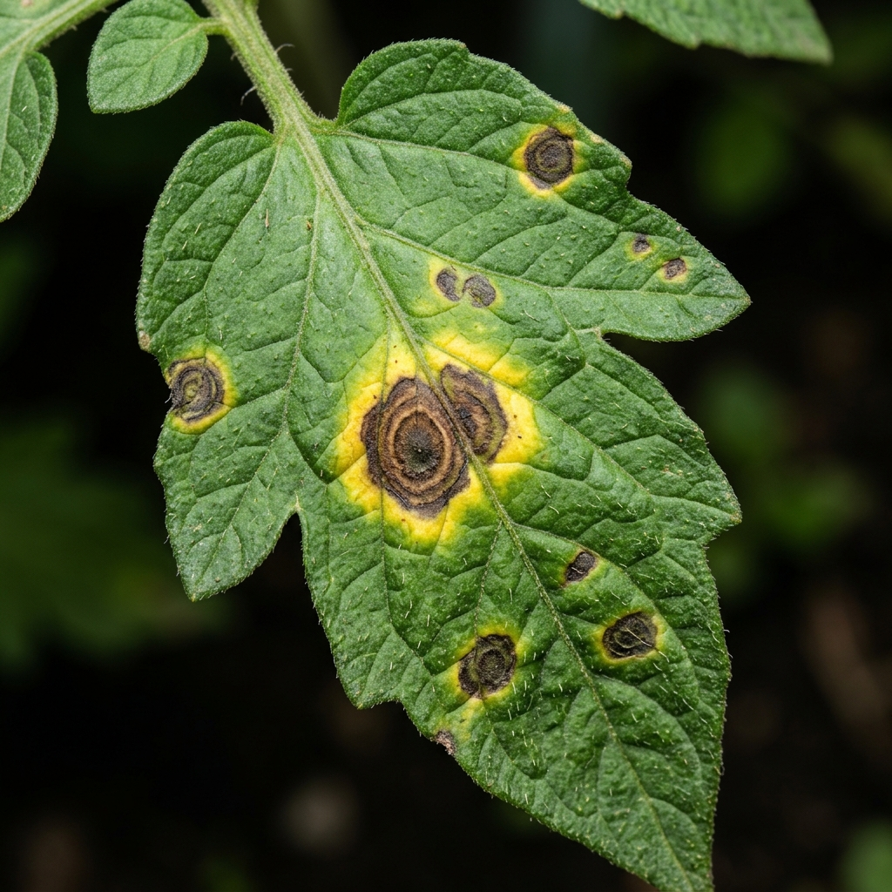

FLORAGUARD AI
Plant Disease Detection & Crop Care System
AI-Assisted Plant Pathology Diagnostic ReportEXECUTIVE SUMMARY
FloraGuard AI analyzed the submitted leaf image using an image-classification model. The system identified visual characteristics associated with Tomato Early Blight with a confidence score of 94.6%. The detected condition is classified as moderate severity based on the visible symptoms in the submitted image.
PROJECT ABSTRACT
FloraGuard AI is an AI-powered plant disease detection system designed to assist farmers, students, researchers and agricultural users in identifying plant diseases from leaf images. The system applies computer vision and deep learning techniques to analyze visual patterns such as discoloration, spots, lesions and texture variations. After processing the uploaded image, the system predicts the most probable disease class and provides crop-care recommendations.
PROBLEM STATEMENT
Plant diseases can significantly reduce crop productivity and quality. Traditional disease identification often depends on manual observation and expert knowledge, which may not always be immediately available. Farmers and agricultural learners may have difficulty identifying diseases at an early stage from visual symptoms alone.
Therefore, there is a need for an accessible AI-based system that can analyze plant leaf images and provide an initial disease assessment quickly and consistently.
RESEARCH / SYSTEM STATEMENT
The proposed system investigates whether computer vision and deep learning techniques can be used to automatically classify plant leaf images into predefined disease categories and provide useful crop-care information based on the predicted class.
SYSTEM OBJECTIVES
INPUT IMAGE ANALYSIS

| Attribute | Analysis Data |
|---|---|
| Image ID | IMG-2026-716808 |
| Plant Category | Tomato |
| Image Format | JPG / PNG |
| Image Resolution | 1024 × 768 |
| Analysis Status | Completed |
| Processing Status | Successful |
DETECTED DISEASE
DISEASE DESCRIPTION
Early blight is a common fungal disease affecting tomato plants. It commonly produces dark lesions on older leaves and may lead to yellowing, leaf drop and reduced plant vigor when the infection progresses.
OBSERVED / ASSOCIATED SYMPTOMS
CAUSE & RISK FACTORS
- High ambient relative humidity (>80%)
- Poor air circulation within dense canopy
- Wet foliage due to overhead sprinkler irrigation
- Infected crop debris left on soil surface
- Warm environmental temperatures (24-29°C)
DISEASE SEVERITY
Note: The estimated severity is based on visual characteristics detected in the submitted image. It is an image-based estimate and should not be considered a field or laboratory severity measurement.
AI MODEL ANALYSIS
| Parameter | Model Spec |
|---|---|
| Model Type | Plant Disease Classification Model |
| Architecture | Convolutional Neural Network (CNN) / Transfer Learning |
| Input Format | Plant Leaf Image (RGB Spectrum) |
| Preprocessing | Resize → Color Normalization → Augmentation |
| Output Prediction | Disease Class & Confidence Score |
| Inference Confidence | 94.6% |
| Inference Status | Successful |
PREDICTION PROBABILITY ANALYSIS
| Disease Class | Probability |
|---|---|
| Tomato Early Blight 👑 (Predicted) | 94.6% |
| Tomato Leaf Mold | 2.8% |
| Tomato Septoria Leaf Spot | 1.7% |
| Healthy | 0.9% |
RECOMMENDED CROP CARE PLAN
- 1. Remove severely infected leaves and dispose of them safely (do not compost).
- 2. Maintain proper spacing between tomato plants (24-36 inches).
- 3. Avoid unnecessary overhead irrigation; use drip lines at soil level.
- 4. Improve canopy air circulation by pruning lower sucker leaves.
- 5. Clear infected plant debris around the base of the crop.
- 6. Monitor adjacent plants daily for early spot formation.
- • Use certified disease-free healthy planting seed material.
- • Maintain strict field sanitation and tool disinfection.
- • Avoid excessive moisture accumulation on leaf blades.
- • Monitor crops regularly during warm, humid weather cycles.
- • Follow locally recommended crop rotation (3-year interval).
| Action | Priority | Recommended Time |
|---|---|---|
| Remove infected leaves | High | Immediately |
| Improve ventilation & pruning | High | Immediately |
| Apply copper fungicide / bio-agent | High | Within 24 Hours |
| Monitor nearby plants | Medium | Daily |
| Maintain field sanitation | Medium | Regularly |
| Expert consultation | High | If symptoms worsen |
PREVENTION & MONITORING
AI PREDICTION CONFIDENCE
Confidence represents the model's estimated probability for the predicted class. A high confidence score does not guarantee that the prediction is correct. Always cross-verify with field observations.
SYSTEM LIMITATIONS
- Prediction depends directly on image clarity and lighting quality.
- Similar diseases may exhibit visually overlapping symptoms.
- Environmental factors may alter visual disease appearance.
- System only classifies diseases present in its trained dataset.
- Image analysis cannot replace laboratory molecular diagnosis.
- Confidence scores should not be interpreted as absolute certainty.
CONCLUSION
FloraGuard AI provides an accessible AI-assisted approach for preliminary plant disease identification. By combining image processing, computer vision and deep learning, the system can classify visible disease patterns and provide supporting crop-care information. The system is intended as a decision-support and educational tool and should be complemented by professional agricultural assessment when required.